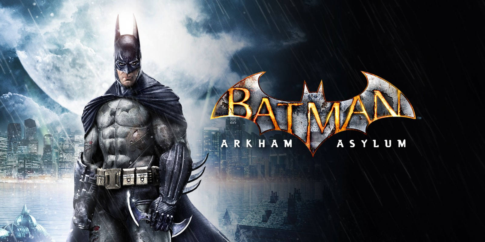

Actualmente no poseo ninguna consola como una PlayStation o una Xbox, pero tengo una Nintendo Switch y también tengo mi laptop con varios juegos que compré en la plataforma de Steam y otros que descargué de sitios externos. Entre todos los que tengo destacan:

BATMAN ARKHAM ASYLUM
Es un videojuego de acción y aventura en el que tomamos el papel de Batman para frustrar los planes del Joker y sus villanos por tomar el control del psiquiátrico de Arkham. El juego tiene un sistema de combate cuerpo a cuerpo conocido como "Hakan slash" (la parte más adictiva del juego), también posee distintos tipos de gadgets, modo sigilo, entre otros. El juego se destaca por su atmósfera oscura y con toques medio creppys, una jugabilidad que permite explorar la isla y combatir a los enemigos usando el entorno, además de una narrativa original que ha sido elogiada por capturar toda la esencia de lo que es Batman. Es tan bueno que lo me acabé en la dificultad dificil como 5 veces al 100%. ¡La nostalgia pega fuerte!
Es un RPG gacha por turnos que adapta fielmente el anime de The Seven Deadly Sins. Destaca por su sistema de combate estratégico con cartas, gráficos 3D, y una historia original que expande el universo del anime. Al principio no me gustaba el genero RPG porque no tenia mucho chiste, pero se volvío mi gusto culposo y es con el que más juego desde el 2021 hasta la actualidad.
Popular desde su salida en 2009. Minecraft es un juego tipo "sandbox" en el que los jugadores exploran un mundo de bloques, extraen recursos, construyen y combaten criaturas para sobrevivir o crear auténticas obras de arte. Su mecánica central ofrece total libertad para manipular un entorno generado de forma aleatoria, con modos de juego como el de supervivencia y el modo creativo.
De hecho lo estoy jugando en un servidor con mis amigos, se llama PlanetaLTI 3 y es aún más interesante, ya que le metimos mas 150 mods y será todo un espectáculo .
Esta es una que todos se saben: ¡El clasico de clasicos!. Left 4 Dead es un juego cooperativo multijugador de disparos en primera persona de acción y terror. Situada posteriormente a una pandemia apocalíptica, la trama del videojuego enfrenta a cuatro supervivientes. El juego relata la historia de los supervivientes en múltiples situaciones con una misma finalidad: Huir de la zona infectada con vida.
El modo multijugador + un mod que permite hasta ocho jugadores en un mismo servidor, lo hace diez veces más divertido.